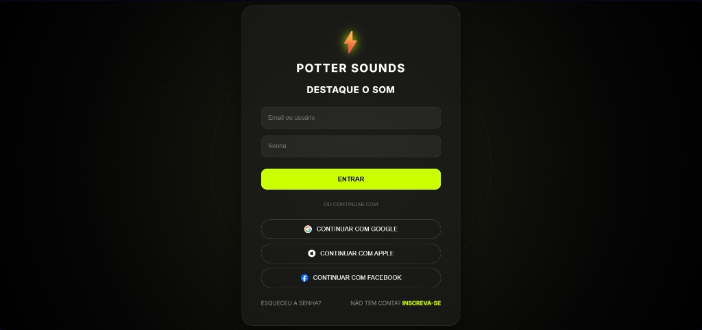
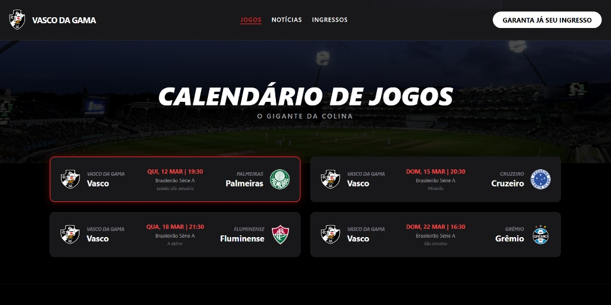

Meus Projetos

Potter Sounds - Login Screen
Interface de autenticação moderna inspirada no Spotify, utilizando Glassmorphism e validação dinâmica de credenciais com JavaScript.

Vasco da Gama - Próximos Jogos
Landing page dinâmica e responsiva que exibe o calendário de jogos, desenvolvida com foco em performance e experiência do usuário (UX/UI).